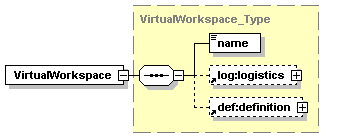
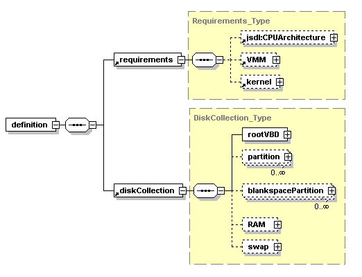
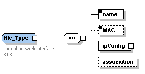
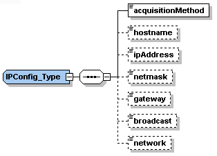

A virtual workspace is an abstraction of an execution environment -- in this VM-based service, a workspace is defined in terms of VM images and the information necessary to instantiate them in a controlled manner.
The workspace metadata type contains information necessary for workspace deployment. This information is deployment-independent; once defined, a workspace may be deployed many times.
This section is divided into three parts:
A VirtualWorkspace element consists of a name, definition section, and logistics section.

You can view the VirtualWorkspace_Type definition online in the vw schema. You can also view a simple sample workspace that is installed with this version of the workspace client.
Specifying metadata about your own VM should be as simple as taking the sample workspace metadata file and adjusting some of the fields (see the metadata quickstart).
The workspace name is a URI that could be used to obtain information such as such as its provenance, creation and modification times, or detailed software catalog (i.e., the deployment capability of a workspace which defines what kinds of applications the workspace can support) . This information is not directly relevant to deployment but would be very useful for clients.
The definition section of the workspace description contains static information that cannot change during deployment. This includes: (1) requirements (kernel images or versions, kernel parameters, and required CPU architecture), (2) references to particular image partitions, and (3) what device names for these partition files the OS is expecting.
You can view the definition type online in the vw-definition schema. You can also view a simple sample workspace that is installed with this version of the workspace client.
The definition section consists of two sections, requirements and diskCollection:

The requirements section lists the CPU architecture, VMM name and version requirements, and kernel requirements. All of its elements are currently respected (but of the kernel element, currently only the parameters section).
The workspace service does not support client specification of kernels until support for multiple image transfers is added. In this version the site should configure a default kernel to use for the VMs or supply a list of (manually cached) kernel names.
While multiple disk partitions are supported (including on-the-fly creation of blankspace partitions), currently only one file may be used with the propagation mechanisms. The others must be files that have been cached already (except for blankspace partitions which are created on-the-fly on the hypervisor nodes).
There is no support for fine grain authorization policies about the file being used for partitions unless you configure the service to use the creation time authorization callout (see the plugins page).
The disk location is listed as a URI and bound to a device name ("/dev/hda") or partition ("/dev/hda1"), for an example see the sample workspace.
The logistics section of the workspace description contains information that is typically bound at deployment time only (late binding). In the current version, this is networking requirements. The workspace's networking settings can be the defined by the deployer/broker, the Workspace Service itself, or by the workspace service's interactions with other services coordinating networking settings and as such is considered to be late binding. In this version only the factory service client can specify the logistics information.
Note: Logistics are different from values in the deployment type. They may change per deployment but also may persist beyond a single deployment. Therefore they are tied to the defintion but are not strictly what defines the particular workspace. For example, if a workspace uses DHCP when it is booted but then it is paused and migrated, the specific networking information must be part of its definition in order to unpause it successfully on a new subnet.

A VM can have an arbitrary number of virtual network interfaces that are mapped to physical hardware in different ways. Broadly, there are two types of networking configurations to manage: how the network interfaces inside the VM need to be configured and how these interfaces need to be bridged and managed outside the VM.
The name of a NIC is a logical name used to refer to it, for example from the deployment type's bandwidth section. The MAC address can optionally be specified (it will otherwise be generated).
An association string can be configured to give more information that may be necessary such as a IP address pool label. Keywords could be correlated with different classes of connectivity or different links and subnets. Alternatively it can be used to express inter-VM connectivity requirements.
As a simple example, consider a physical node with two physical NICs that is configured with the association "public" and "private." Each of these keywords map to an in-memory bridge connected to each NIC and one NIC has Internet access and one NIC has private LAN access. The metadata does not specify the name of the physical bridge the VM needs to be bridged to (since that is hypervisor node specific), it maps to a class of connectivity instead.
The ipConfig section specifies how the VM should be internally configured. Just like the MAC, mode, and association L2, the IP settings may be decided at deploy time. Thus it is necessary to support a wide range of L3 options for the VM's NIC(s) and be able to pass this information to the VM.

There are three acquisitionMethods the NIC can use for its settings: AcceptAndConfigure, Advisory, and AllocateAndConfigure. AcceptAndConfigure and AllocateAndConfigure signal to the workspace service that it is responsible for configuring the VM itself with specific settings (so that during its boot process the virtual hardware is configured with the specified settings) and Advisory signals that the VM should just be configured with the appropriate hardware and connectivity settings (some other entity will configure the networking settings inside the VM).
AcceptAndConfigure means the client must have the exact NIC configuration requested in the deployment request. AllocateAndConfigure means that the client is requesting an address from a pool of available addresses. See the text on associations above. For more information about address pools, see the administrator's guide.
This version of the workspace service supports DHCP for the AcceptAndConfigure and AllocateAndConfigure acquisition methods, both require getting specific settings "into" the workspace dynamically. The workspace backend program employs DHCP which will intercept DHCP requests comding from the VM's networking interfaces and assign a specific setting to it. Note that this includes assigning specific, client requested IP addresses (DHCP can be made to have specific responses to a request). For more information on setting up DHCP and how it is implemented in such a way that does not interfere with a site's DHCP server, see the administrator's guide.
_NIMBUS_CENTER2_COLUMN_END _NIMBUS_FOOTER1 _NIMBUS_FOOTER2 _NIMBUS_FOOTER3